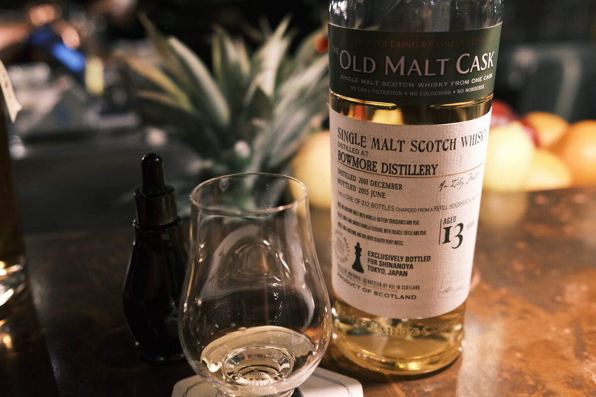

Bowmore 2001 Hunter Laing 13 years 58.5% (refill hogshead)
OB Bowmore gets a bit of a bad rep. Luckily this is not OB. Bottled for Shinanoya in Japan under Hunter Laing’s “Old Malt Cask” label.
Colour Gold.
Nose Vegetal and fruity. Celery, carrot, mangoes. Fresh and grassy (no understatement here). Orchard fruits, tart, apples and pears. Waxy fruit. Scented, lightly perfumed candles. Here we go: some elegant peat. Mossy, heady stuff. Rosewater. With some water, forested: wet oak, mushrooms, flowers, flowing creeks. A bit new age: incense, and a drop of oil. Turkish delight and rosewater – clarity of these is impressive.
Palate Grassy, mossy peat. Ash and soot. Honey, caramel malt. Very malt forward, lovely. Liquorice and other assorted sweets. Bright, lemon-lime acidity. A hint of bark, not unlike bitters. With water: lemon syrup and orange peel. Don’t forget the pith!
Finish A touch of smoke, but mainly vegetal peat. Light honey. Oats and rosewater. Very floral, malty. Scented candles. Hot and warming, quite long. Scented smoke throughout. With water, smokier and earthier. Turkish delight. Watermelon, rockmelon.
Comments Elegance is the first word that comes to mind. Woody, scented, malt-driven. The antithesis to your dime-a-dozen smoke bomb Islay. I also love rosewater. 89/100.

Posted by Dominic on 09 May 2021